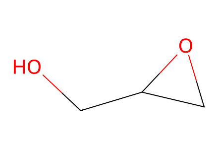
OCC1CO1SI experimental sections S1-S17 and spectral structures. Main article unavailable; protected aromatic acids are input boundaries. Glycidol and 1,2-DAG stereochemistry unspecified. Facts compiled deterministically; independent review pending.
完整 JSON · 逐步 CSV · 路线序列 · SDF · HRMS 核对
| 事件 | 分子连接 | 报告产率 | Canonical reaction SMILES |
|---|---|---|---|
| Ga | 9a + 11 → 10a | not reported | CCCCCCCCCCCCCCCCCCCCCC(=O)O.OCC1CO1>>CCCCCCCCCCCCCCCCCCCCCC(=O)OCC1CO1 |
| Da | 10a + 9a → 7a + 7a' | not reported | CCCCCCCCCCCCCCCCCCCCCC(=O)O.CCCCCCCCCCCCCCCCCCCCCC(=O)OCC1CO1>>CCCCCCCCCCCCCCCCCCCCCC(=O)OCC(CO)OC(=O)CCCCCCCCCCCCCCCCCCCCC.CCCCCCCCCCCCCCCCCCCCCC(=O)OCC(O)COC(=O)CCCCCCCCCCCCCCCCCCCCC |
| Gb | 9b + 11 → 10b | 10b: 86% | CCCCCCCCCCCCCCCC(=O)O.OCC1CO1>>CCCCCCCCCCCCCCCC(=O)OCC1CO1 |
| Db | 10b + 9b → 7b + 7b' | not reported | CCCCCCCCCCCCCCCC(=O)O.CCCCCCCCCCCCCCCC(=O)OCC1CO1>>CCCCCCCCCCCCCCCC(=O)OCC(CO)OC(=O)CCCCCCCCCCCCCCC.CCCCCCCCCCCCCCCC(=O)OCC(O)COC(=O)CCCCCCCCCCCCCCC |
| Gc | 9c + 11 → 10c | 10c: 83% | CCCCCCCC/C=C\CCCCCCCC(=O)O.OCC1CO1>>CCCCCCCC/C=C\CCCCCCCC(=O)OCC1CO1 |
| Dc | 10c + 9c → 7c + 7c' | not reported | CCCCCCCC/C=C\CCCCCCCC(=O)O.CCCCCCCC/C=C\CCCCCCCC(=O)OCC1CO1>>CCCCCCCC/C=C\CCCCCCCC(=O)OCC(CO)OC(=O)CCCCCCC/C=C\CCCCCCCC.CCCCCCCC/C=C\CCCCCCCC(=O)OCC(O)COC(=O)CCCCCCC/C=C\CCCCCCCC |
| A16 | 7b + 8a → 16 | 16: 70% | CCCCCCCCCCCCCCCC(=O)OCC(O)COC(=O)CCCCCCCCCCCCCCC.COc1cc(/C=C/C(=O)O)ccc1OC(C)=O>>CCCCCCCCCCCCCCCC(=O)OCC(COC(=O)CCCCCCCCCCCCCCC)OC(=O)/C=C/c1ccc(OC(C)=O)c(OC)c1 |
| A18 | 7b + 8b → 18 | 18: 31% | CC(=O)Oc1ccc(/C=C/C(=O)O)cc1OC(C)=O.CCCCCCCCCCCCCCCC(=O)OCC(O)COC(=O)CCCCCCCCCCCCCCC>>CCCCCCCCCCCCCCCC(=O)OCC(COC(=O)CCCCCCCCCCCCCCC)OC(=O)/C=C/c1ccc(OC(C)=O)c(OC(C)=O)c1 |
| A20 | 7b + 8c → 20 | 20: 69% | CCCCCCCCCCCCCCCC(=O)OCC(O)COC(=O)CCCCCCCCCCCCCCC.O=C(O)/C=C/c1ccccc1>>CCCCCCCCCCCCCCCC(=O)OCC(COC(=O)CCCCCCCCCCCCCCC)OC(=O)/C=C/c1ccccc1 |
| A21 | 7c + 8a → 21 | 21: 61% | CCCCCCCC/C=C\CCCCCCCC(=O)OCC(O)COC(=O)CCCCCCC/C=C\CCCCCCCC.COc1cc(/C=C/C(=O)O)ccc1OC(C)=O>>CCCCCCCC/C=C\CCCCCCCC(=O)OCC(COC(=O)CCCCCCC/C=C\CCCCCCCC)OC(=O)/C=C/c1ccc(OC(C)=O)c(OC)c1 |
| A22 | 7c + 8b → 22 | 22: 34% | CC(=O)Oc1ccc(/C=C/C(=O)O)cc1OC(C)=O.CCCCCCCC/C=C\CCCCCCCC(=O)OCC(O)COC(=O)CCCCCCC/C=C\CCCCCCCC>>CCCCCCCC/C=C\CCCCCCCC(=O)OCC(COC(=O)CCCCCCC/C=C\CCCCCCCC)OC(=O)/C=C/c1ccc(OC(C)=O)c(OC(C)=O)c1 |
| A23 | 7c + 8c → 23 | 23: 79% | CCCCCCCC/C=C\CCCCCCCC(=O)OCC(O)COC(=O)CCCCCCC/C=C\CCCCCCCC.O=C(O)/C=C/c1ccccc1>>CCCCCCCC/C=C\CCCCCCCC(=O)OCC(COC(=O)CCCCCCC/C=C\CCCCCCCC)OC(=O)/C=C/c1ccccc1 |
| A12 | 7a + 8a → 12 | 12: 71% | CCCCCCCCCCCCCCCCCCCCCC(=O)OCC(O)COC(=O)CCCCCCCCCCCCCCCCCCCCC.COc1cc(/C=C/C(=O)O)ccc1OC(C)=O>>CCCCCCCCCCCCCCCCCCCCCC(=O)OCC(COC(=O)CCCCCCCCCCCCCCCCCCCCC)OC(=O)/C=C/c1ccc(OC(C)=O)c(OC)c1 |
| A14 | 7a + 8b → 14 | 14: 26% | CC(=O)Oc1ccc(/C=C/C(=O)O)cc1OC(C)=O.CCCCCCCCCCCCCCCCCCCCCC(=O)OCC(O)COC(=O)CCCCCCCCCCCCCCCCCCCCC>>CCCCCCCCCCCCCCCCCCCCCC(=O)OCC(COC(=O)CCCCCCCCCCCCCCCCCCCCC)OC(=O)/C=C/c1ccc(OC(C)=O)c(OC(C)=O)c1 |
| A15 | 7a + 8c → 15 | 15: 70% | CCCCCCCCCCCCCCCCCCCCCC(=O)OCC(O)COC(=O)CCCCCCCCCCCCCCCCCCCCC.O=C(O)/C=C/c1ccccc1>>CCCCCCCCCCCCCCCCCCCCCC(=O)OCC(COC(=O)CCCCCCCCCCCCCCCCCCCCC)OC(=O)/C=C/c1ccccc1 |
| H19 | 18 → 19 | 19: 83% | CCCCCCCCCCCCCCCC(=O)OCC(COC(=O)CCCCCCCCCCCCCCC)OC(=O)/C=C/c1ccc(OC(C)=O)c(OC(C)=O)c1>>CCCCCCCCCCCCCCCC(=O)OCC(COC(=O)CCCCCCCCCCCCCCC)OC(=O)/C=C/c1ccc(O)c(O)c1 |
| H1 | 12 → 1 | 1: 86% | CCCCCCCCCCCCCCCCCCCCCC(=O)OCC(COC(=O)CCCCCCCCCCCCCCCCCCCCC)OC(=O)/C=C/c1ccc(OC(C)=O)c(OC)c1>>CCCCCCCCCCCCCCCCCCCCCC(=O)OCC(COC(=O)CCCCCCCCCCCCCCCCCCCCC)OC(=O)/C=C/c1ccc(O)c(OC)c1 |

OCC1CO1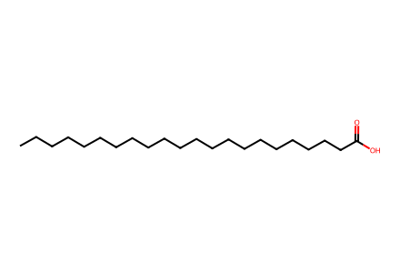
CCCCCCCCCCCCCCCCCCCCCC(=O)O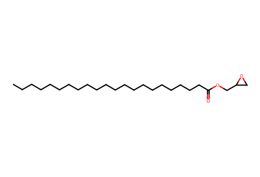
CCCCCCCCCCCCCCCCCCCCCC(=O)OCC1CO1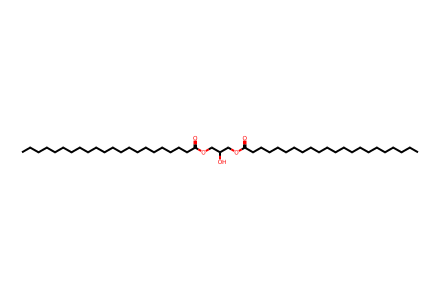
CCCCCCCCCCCCCCCCCCCCCC(=O)OCC(O)COC(=O)CCCCCCCCCCCCCCCCCCCCC
CCCCCCCCCCCCCCCCCCCCCC(=O)OCC(CO)OC(=O)CCCCCCCCCCCCCCCCCCCCC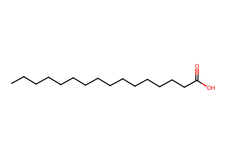
CCCCCCCCCCCCCCCC(=O)O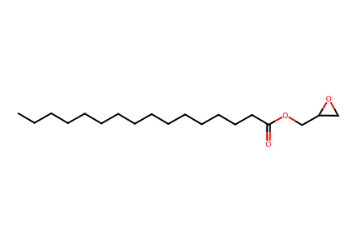
CCCCCCCCCCCCCCCC(=O)OCC1CO1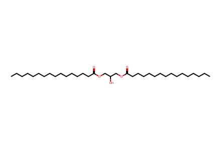
CCCCCCCCCCCCCCCC(=O)OCC(O)COC(=O)CCCCCCCCCCCCCCC
CCCCCCCCCCCCCCCC(=O)OCC(CO)OC(=O)CCCCCCCCCCCCCCC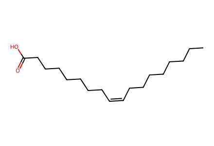
CCCCCCCC/C=C\CCCCCCCC(=O)O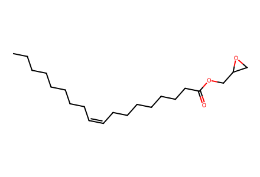
CCCCCCCC/C=C\CCCCCCCC(=O)OCC1CO1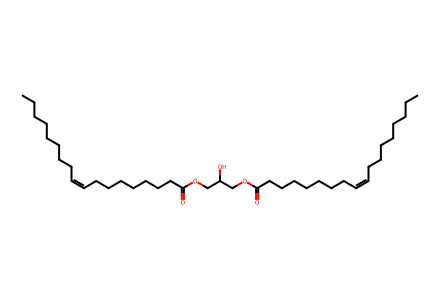
CCCCCCCC/C=C\CCCCCCCC(=O)OCC(O)COC(=O)CCCCCCC/C=C\CCCCCCCC
CCCCCCCC/C=C\CCCCCCCC(=O)OCC(CO)OC(=O)CCCCCCC/C=C\CCCCCCCC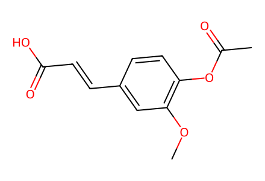
COc1cc(/C=C/C(=O)O)ccc1OC(C)=O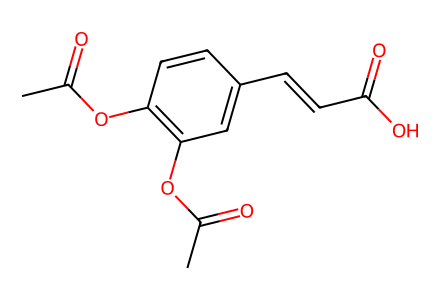
CC(=O)Oc1ccc(/C=C/C(=O)O)cc1OC(C)=O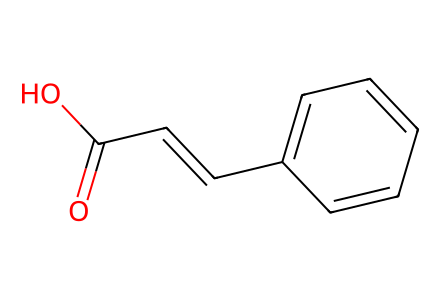
O=C(O)/C=C/c1ccccc1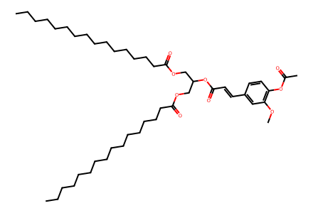
CCCCCCCCCCCCCCCC(=O)OCC(COC(=O)CCCCCCCCCCCCCCC)OC(=O)/C=C/c1ccc(OC(C)=O)c(OC)c1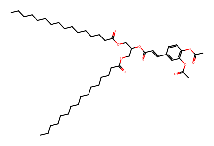
CCCCCCCCCCCCCCCC(=O)OCC(COC(=O)CCCCCCCCCCCCCCC)OC(=O)/C=C/c1ccc(OC(C)=O)c(OC(C)=O)c1CCCCCCCCCCCCCCCC(=O)OCC(COC(=O)CCCCCCCCCCCCCCC)OC(=O)/C=C/c1ccccc1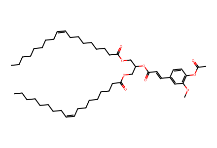
CCCCCCCC/C=C\CCCCCCCC(=O)OCC(COC(=O)CCCCCCC/C=C\CCCCCCCC)OC(=O)/C=C/c1ccc(OC(C)=O)c(OC)c1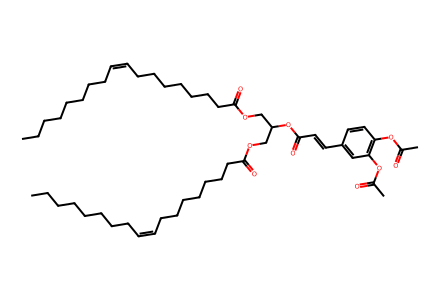
CCCCCCCC/C=C\CCCCCCCC(=O)OCC(COC(=O)CCCCCCC/C=C\CCCCCCCC)OC(=O)/C=C/c1ccc(OC(C)=O)c(OC(C)=O)c1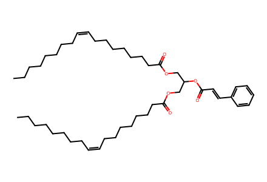
CCCCCCCC/C=C\CCCCCCCC(=O)OCC(COC(=O)CCCCCCC/C=C\CCCCCCCC)OC(=O)/C=C/c1ccccc1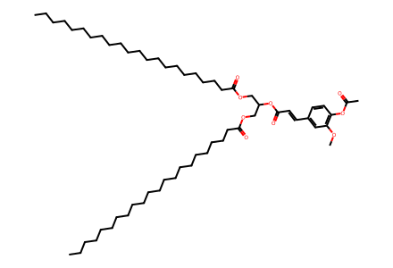
CCCCCCCCCCCCCCCCCCCCCC(=O)OCC(COC(=O)CCCCCCCCCCCCCCCCCCCCC)OC(=O)/C=C/c1ccc(OC(C)=O)c(OC)c1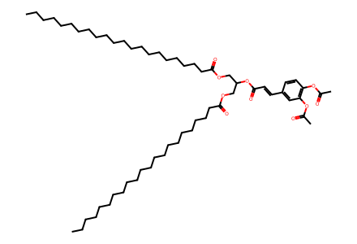
CCCCCCCCCCCCCCCCCCCCCC(=O)OCC(COC(=O)CCCCCCCCCCCCCCCCCCCCC)OC(=O)/C=C/c1ccc(OC(C)=O)c(OC(C)=O)c1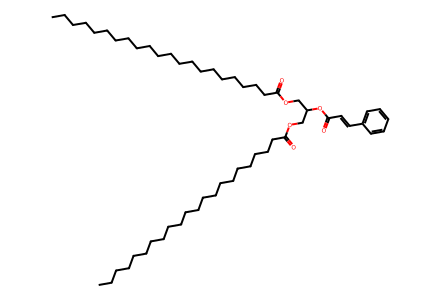
CCCCCCCCCCCCCCCCCCCCCC(=O)OCC(COC(=O)CCCCCCCCCCCCCCCCCCCCC)OC(=O)/C=C/c1ccccc1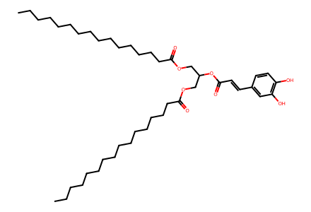
CCCCCCCCCCCCCCCC(=O)OCC(COC(=O)CCCCCCCCCCCCCCC)OC(=O)/C=C/c1ccc(O)c(O)c1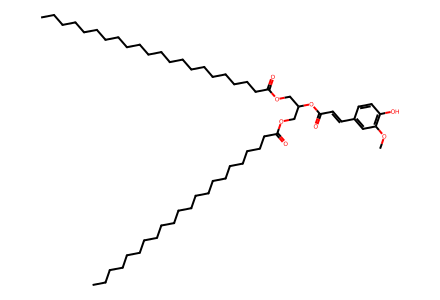
CCCCCCCCCCCCCCCCCCCCCC(=O)OCC(COC(=O)CCCCCCCCCCCCCCCCCCCCC)OC(=O)/C=C/c1ccc(O)c(OC)c1